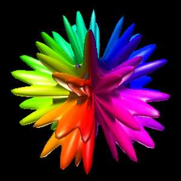
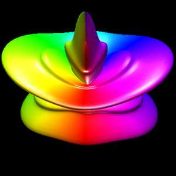
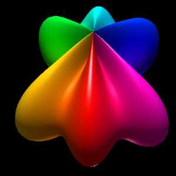
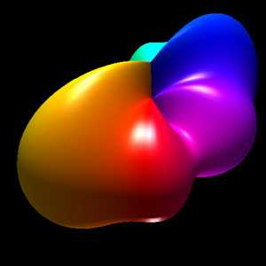
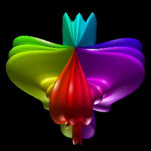
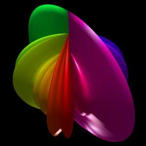
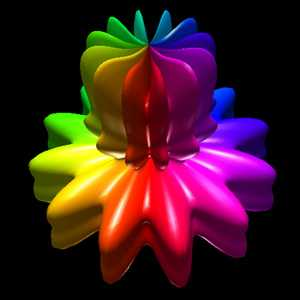
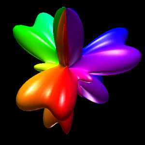
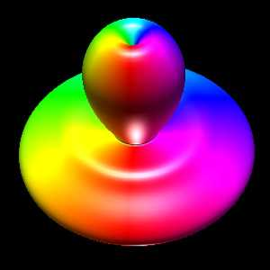
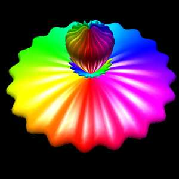
|
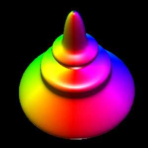
Formulation
The following closed objects are commonly called spherical harmonics
although they are only remotely related to the mathematical definition
found in the solution to certain wave functions, most notable the
eigenfunctions of angular momentum operators.
The formula is quite simple, the form used here is based upon spherical
(polar) coordinates (radius, theta, phi).
r =
sin(m0 phi)m1 +
cos(m2 phi)m3 +
sin(m4 theta)m5 +
cos(m6 theta)m7
Where phi ranges from 0 to pi (lines of latitude),
and theta ranges from 0 to 2 pi (lines of longitude), and r is the
radius. The parameters m0, m1, m2, m3, m4, m5, m6, and m7 are all
integers greater than or equal to 0.
Implementation details
The images here were created using OpenGL. While the parameters
m0, m1, m2, m3, m4, m5, m6, m7
can range from 0 upwards, as the degree increases the objects become
increasingly "pointed" and a large number of polygons are required
to represent the surface faithfully. All the examples here have a
maximum degree of 6. The maximum number of polygons used is 128 x 128
and most were only 64 x 64, that is,
the theta and phi angles are split into 64 equal steps each.
The C function that computes a point on the surface is
XYZ Eval(double theta,double phi, int *m)
{
double r = 0;
XYZ p;
r += pow(sin(m[0]*phi),(double)m[1]);
r += pow(cos(m[2]*phi),(double)m[3]);
r += pow(sin(m[4]*theta),(double)m[5]);
r += pow(cos(m[6]*theta),(double)m[7]);
p.x = r * sin(phi) * cos(theta);
p.y = r * cos(phi);
p.z = r * sin(phi) * sin(theta);
return(p);
}
The OpenGL snippet that creates the geometry is
du = TWOPI / (double)resolution; /* Theta */
dv = PI / (double)resolution; /* Phi */
glBegin(GL_QUADS);
for (i=0;i<resolution;i++) {
u = i * du;
for (j=0;j<resolution;j++) {
v = j * dv;
q[0] = Eval(u,v);
n[0] = CalcNormal(q[0],
Eval(u+du/10,v),
Eval(u,v+dv/10));
c[0] = GetColour(u,0.0,TWOPI,colourmap);
glNormal3f(n[0].x,n[0].y,n[0].z);
glColor3f(c[0].r,c[0].g,c[0].b);
glVertex3f(q[0].x,q[0].y,q[0].z);
q[1] = Eval(u+du,v);
n[1] = CalcNormal(q[1],
Eval(u+du+du/10,v),
Eval(u+du,v+dv/10));
c[1] = GetColour(u+du,0.0,TWOPI,colourmap);
glNormal3f(n[1].x,n[1].y,n[1].z);
glColor3f(c[1].r,c[1].g,c[1].b);
glVertex3f(q[1].x,q[1].y,q[1].z);
q[2] = Eval(u+du,v+dv);
n[2] = CalcNormal(q[2],
Eval(u+du+du/10,v+dv),
Eval(u+du,v+dv+dv/10));
c[2] = GetColour(u+du,0.0,TWOPI,colourmap);
glNormal3f(n[2].x,n[2].y,n[2].z);
glColor3f(c[2].r,c[2].g,c[2].b);
glVertex3f(q[2].x,q[2].y,q[2].z);
q[3] = Eval(u,v+dv);
n[3] = CalcNormal(q[3],
Eval(u+du/10,v+dv),
Eval(u,v+dv+dv/10));
c[3] = GetColour(u,0.0,TWOPI,colourmap);
glNormal3f(n[3].x,n[3].y,n[3].z);
glColor3f(c[3].r,c[3].g,c[3].b);
glVertex3f(q[3].x,q[3].y,q[3].z);
}
}
glEnd();
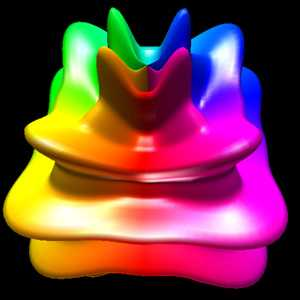
Exercises for the reader
While it is easy to see that the even parameters m0, m2, m4, m6
need to be integers for closed forms, what about the odd terms
m1, m3, m5, m7. Can they be real numbers?
The figures on this page all use the same colour map, it maps theta
onto a colour map that smoothly progresses through the colours
red -> yellow -> green -> cyan -> blue -> magenta -> red. Note it is
a circular colour map. There are many other ways of colouring these
surfaces, for example a radial intensity variation might look nice.
While the objects here all look the same size, there is generally
quite a bit of variation in the size arising from applying the above
formula directly. Find a normalising term (function of the m0, m1, .... m7)
that will make surfaces fit into a unit cube.
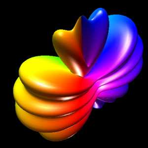
|
{kind=link}
{kind=link}